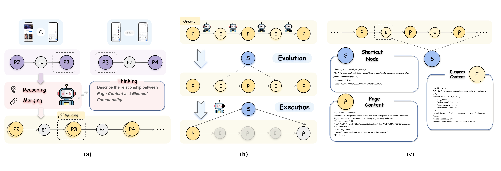

BibTeX
@article{jiang2024appagentx,
title={AppAgentX: Evolving GUI Agents as Proficient Smartphone Users},
author={Jiang, Wenjia and Zhuang, Yangyang and Song, Chenxi and Zhang, Chi and Yang, Xu},
journal={arXiv preprint},
year={2024}
}
Recent advancements in Large Language Models (LLMs) have led to the development of intelligent LLM-based agents capable of interacting with graphical user interfaces (GUIs). These agents demonstrate strong reasoning and adaptability, enabling them to perform complex tasks that traditionally required predefined rules. However, the reliance on step-by-step reasoning in LLM-based agents often results in inefficiencies, particularly for routine tasks. In contrast, traditional rule-based systems excel in efficiency but lack the intelligence and flexibility to adapt to novel scenarios. To address this challenge, we propose a novel evolutionary framework for GUI agents that enhances operational efficiency while retaining intelligence and flexibility. Our approach incorporates a memory mechanism that records the agent's task execution history. By analyzing this history, the agent identifies repetitive action sequences and evolves high-level actions that act as shortcuts, replacing these low-level operations and improving efficiency. This allows the agent to focus on tasks requiring more complex reasoning, while simplifying routine actions. Experimental results on multiple benchmark tasks demonstrate that our approach significantly outperforms existing methods in both efficiency and accuracy. The code will be open-sourced to support further research.

Overview of the proposed framework. (a) The trajectory of a task execution is decomposed into multiple overlapping triples. Based on these triples, the LLM generates functional descriptions of both pages and UI elements. Descriptions of pages that are repeatedly generated are then merged. The entire interaction history is recorded using a chain of nodes. (b) The proposed evolutionary mechanism and execution process. The evolutionary mechanism generates shortcut nodes, which allow the agent to execute a series of actions efficiently without reasoning step by step. (c) An example of the content of nodes within the chain. Each node records essential information, including descriptions of pages, UI elements, and high-level actions, to facilitate understanding of the agent's interactions.
Metrics explanation:
• Steps↓: The average number of actions required to complete a task. Lower values indicate higher efficiency.
• Step Time (s)↓: The average time taken for each action (step) during task execution. Lower values indicate faster steps.
• Tokens (k)↓: The total number of tokens used by the language model during task execution. Fewer tokens indicate better resource efficiency.
• SR (Success Rate)↑: The percentage of tasks successfully completed. Higher values indicate better performance.
• Task Time↓: The total time taken to complete a task. Lower values mean faster task completion.
| Method | Memory Type | Action Space | Steps↓ | Step Time (s)↓ | Tokens (k)↓ | SR ↑ |
|---|---|---|---|---|---|---|
| GPT-4o (Baseline) | None | Basic | 10.8 | 26 | 6.72 | 16.9% |
| Element | Basic | 9.3 | 24 | 8.46 | 69.7% | |
| AppAgentX | Chain | Basic | 9.1 | 23 | 9.26 | 70.8% |
| Chain | Basic+Evolve | 5.7 | 16 | 4.94 | 71.4% |
Table 1: Analysis of Different Components in AppAgentX. This table compares the performance differences resulting from the different designs with the baseline. Both our memory design and evolution mechanism can improve success rate and efficiency.
| Benchmarks | Task Num. | Framework | Task Time↓ | Tokens (k)↓ | SR↑ |
|---|---|---|---|---|---|
| DroidTask | 158 | AppAgent | 106.24 | 11.5 | 46.3% |
| AppAgentX | 56.29 | 5.1 | 88.2% | ||
| MobileBench (SAST) | 332 | AppAgent | 150.24 | 7.6 | 72.6% |
| AppAgentX | 42.38 | 5.4 | 86.1% |
Table 2: Comparison with AppAgent on Large Benchmarks. This table evaluates the efficiency and accuracy of different frameworks on benchmarks containing a large number of tasks. In the MobileBench, SAST (Single-App-Single-Task) refers to a real dataset containing only a single task description.
| LLM | Mobile-Agent-v2 | AppAgentX |
|---|---|---|
| Gemini-1.5-Pro | 25.6 | 12.4 |
| Claude-3.5 | 38.4 | 11.4 |
| GPT-4o | 43.5 | 17.5 |
Table 3: Comparison of Average Execution Time per Step. This table presents the average execution time (seconds ↓) across different LLMs and frameworks.
We propose an evolving GUI agent framework that enhances efficiency and intelligence by abstracting high-level actions from execution history. Unlike rule-based automation, our approach generalizes task execution by compressing repetitive operations, balancing intelligent reasoning with efficient execution. A chain-based knowledge framework enables continuous behavior refinement, improving adaptability and reducing redundancy. Exper- iments show our framework outperforms existing methods in accuracy and efficiency.
@article{jiang2024appagentx,
title={AppAgentX: Evolving GUI Agents as Proficient Smartphone Users},
author={Jiang, Wenjia and Zhuang, Yangyang and Song, Chenxi and Zhang, Chi and Yang, Xu},
journal={arXiv preprint},
year={2024}
}